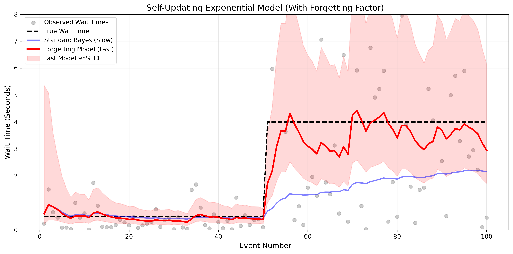

Exponential-Gamma Conjugate Models with Exponential Forgetting
While the Poisson distribution counts how many events occur in a fixed time window, the Exponential distribution models the opposite: how much time passes between events. This is critical in reliability engineering (mean time before failure), queueing theory (time between customer arrivals), and server monitoring (time between API requests).
In this chapter, we look at the Exponential-Gamma model. Like the Poisson model, its conjugate prior is the Gamma distribution, making it mathematically elegant. However, the Exponential distribution is highly sensitive to outliers, so we will explore how to stabilize it using a forgetting factor to track sudden shifts in wait times.
Let \(x\) be the continuous wait time until the next event. Our goal is to estimate the rate parameter \(\lambda\) (e.g., events per second).
The likelihood of observing a sequence of wait times \(x_1, x_2, \dots, x_n\) is:
We place a Gamma distribution prior on \(\lambda\) with parameters \(\alpha\) and \(\beta\):
Multiplying the likelihood and prior gives the posterior:
Thus, the parameters are updated by simply adding the number of observations and the total time waited:
Note: The expected rate is \(E[\lambda] = \frac{\alpha}{\beta}\), and the expected wait time is \(E[x] = \frac{\beta}{\alpha}\).
Just like the previous models, the standard Exponential-Gamma model assumes the world is stationary. If a server suddenly experiences a massive traffic jam, wait times will spike. A standard model will take a very long time to adapt because it is anchored by thousands of past fast wait times.
To track this, we introduce a forgetting factor \(f\). This is mathematically identical to the Poisson model, but we apply it to continuous time:
By setting \(f = 0.88\), the model only remembers the last ~10 to 15 events. When the server slows down, the old fast wait times are quickly forgotten, and the model's expected wait time smoothly climbs to the new reality.
In the simulation below, a server initially processes requests with a fast wait time of 0.5 seconds (True Rate = 2.0). At event 25, the server gets overloaded and wait times jump to 4.0 seconds (True Rate = 0.25).

import numpy as np
import matplotlib.pyplot as plt
from scipy.stats import gamma
import os
# Ensure the images directory exists
os.makedirs('images', exist_ok=True)
class FastOnlineExponentialModel:
def __init__(self, alpha_prior=1.0, beta_prior=1.0, forgetting_factor=1.0):
self.alpha = alpha_prior
self.beta = beta_prior
self.ff = forgetting_factor
def update(self, wait_time):
# Apply forgetting factor to old memory, then add new data
self.alpha = (self.alpha * self.ff) + 1
self.beta = (self.beta * self.ff) + wait_time
def get_expected_wait_time(self):
# Expected rate is alpha/beta, so wait time is beta/alpha
return self.beta / self.alpha
def get_credible_interval(self, confidence=0.95):
lp = (1.0 - confidence) / 2.0
up = 1.0 - lp
scale = 1.0 / self.beta
# Bounds for rate
lb_rate = gamma.ppf(lp, a=self.alpha, scale=scale)
ub_rate = gamma.ppf(up, a=self.alpha, scale=scale)
# Invert bounds for wait time (note the swap)
return 1.0 / ub_rate, 1.0 / lb_rate
# 1. GENERATE DATA (True wait jumps from 0.5s to 4.0s at step 25)
np.random.seed(42)
n_steps = 50
true_rate_phase1 = 2.0 # 0.5s wait
true_rate_phase2 = 0.25 # 4.0s wait
data_list = []
for i in range(n_steps):
if i < 25:
wait_time = np.random.exponential(1.0 / true_rate_phase1)
else:
wait_time = np.random.exponential(1.0 / true_rate_phase2)
data_list.append(wait_time)
# 2. INITIALIZE MODELS
standard_model = FastOnlineExponentialModel(forgetting_factor=1.0) # Static
fast_model = FastOnlineExponentialModel(forgetting_factor=0.88) # Dynamic
# Lists for plotting
std_wait_times, fast_wait_times = [], []
fast_lb, fast_ub = [], []
# 3. RUN SIMULATION
for wait_time in data_list:
standard_model.update(wait_time)
fast_model.update(wait_time)
std_wait_times.append(standard_model.get_expected_wait_time())
fast_wait_times.append(fast_model.get_expected_wait_time())
lb, ub = fast_model.get_credible_interval()
fast_lb.append(lb); fast_ub.append(ub)
# 4. PLOT
plt.figure(figsize=(12, 6))
plt.scatter(range(1, n_steps + 1), data_list, alpha=0.4, color='gray', label='Observed Wait Times')
plt.plot(range(1, n_steps + 1), [0.5]*25 + [4.0]*25, 'k--', linewidth=2, label='True Wait Time')
plt.plot(range(1, n_steps + 1), std_wait_times, 'b-', linewidth=2, alpha=0.5, label='Standard Bayes (Slow)')
plt.plot(range(1, n_steps + 1), fast_wait_times, 'darkorange', linewidth=2.5, label='Forgetting Model (Fast)')
plt.fill_between(range(1, n_steps + 1), fast_lb, fast_ub, color='orange', alpha=0.15, label='Fast Model 95% CI')
plt.title('Speeding up Exponential-Gamma Learning via Forgetting Factor', fontsize=14)
plt.xlabel('Event Number')
plt.ylabel('Wait Time (Seconds)')
plt.ylim(0, 8)
plt.legend(loc='upper left')
plt.grid(True, alpha=0.3)
plt.tight_layout()
# Save to the images folder
plt.savefig('images/exponential_graph.png', dpi=300, bbox_inches='tight')
plt.show()